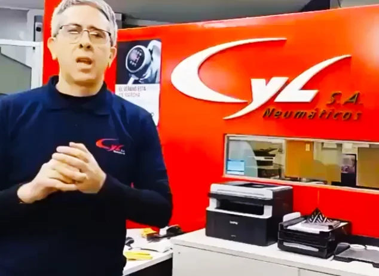

CASO 01 Neumáticos · Comercio
Una web que acompaña la actividad comercial.
- El desafío
- Presentar la oferta de neumáticos para distintos vehículos y facilitar el paso de la búsqueda a la consulta.
- La solución
- Un sitio con productos organizados por categoría, información de la empresa y accesos directos para contactar y pedir una cotización.
LO QUE DESTACA EL CLIENTE
Más consultas y ventas, según el cliente
Pablo cuenta que notaron más consultas, más movimiento y más ventas. Un resultado que describe desde su experiencia en CYL.

EN PRIMERA PERSONAVer testimonioNotamos un cambio real: Más consultas, más movimiento y sobretodo, más ventas
Pablo AvilaCoordinador de CYL S.A.